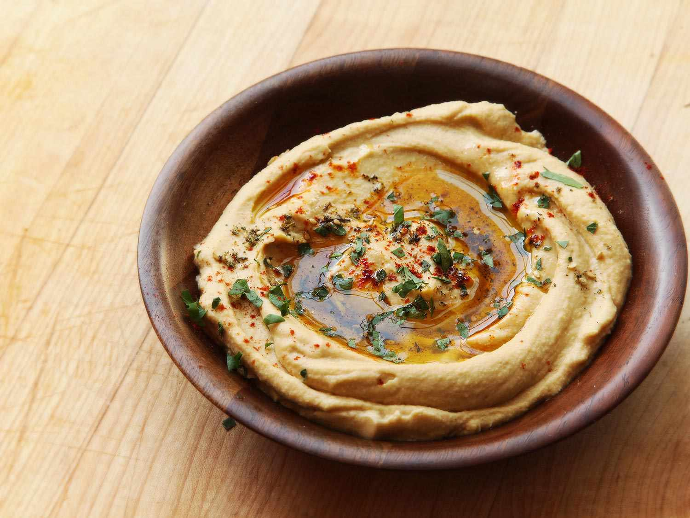

Humble Hummus

I did not make the hummus shown above (not my bowl either).↑
The Hummus, among us.
Hummus isn't just a great snack, it's also a lifestyle.
Seriously, ask anyone in Tel-Aviv if they've gone more
than 24 hours without consuming some. There isn't much
that doesn't go with hummus, it's endlessly customizable,
like linux and whether you want to go super or creamy
or rustic, skin on, canned beans, and 5 mins in a blender
you'll probably end up pleasing anyone around you.
You'll want to think about customization before you make
the effort. Roasted peppers or garlic, virgin olive oil,
toased bread seasoned bread sticks, the sky's the limit.
Having a food processor, or a gas powered blender would
be recomended though I'm sure a person would be alright
a spoon, a mashing device of some sort and some muscles.
Happy hummusing!
Humble Hummus - Ingredients
Link to the recipe.
-
1 cup dried chickpeas
-
2 teaspoons baking soda
-
Juice of 1 1/2 large lemons (about 1/3 cup), more to taste
-
2 - 4 cloves garlic, grated
-
1¾ teaspoons kosher salt, more to taste
-
1 cup sesame tahini
-
½ teaspoon ground cumin, more to taste
-
Paprika, for serving
-
Olive oil, for serving
-
Chopped fresh parsley, for serving
Humble Hummus - Preparation
-
In a bowl, cover chickpeas by at least
2 inches of cold water. Add 1 teaspoon
baking soda and let soak at room
temperature overnight. Drain and rinse.
-
In a medium pot, cover soaked chickpeas
by at least 4 inches of water. Add the
remaining teaspoon baking soda and
bring to a boil over high heat. Reduce
heat to medium high and let cook at a
vigorous simmer until chickpeas are
quite soft, 1 to 1 1/2 hours.
(Overcooked chickpeas are the secret
to creamy hummus, so don’t worry if
they start to break down a little.)
Drain.
-
While chickpeas are cooking, make the
tahini sauce. In a blender, combine
the lemon juice, garlic and 1/4
teaspoon salt. Let mixture sit 10
minutes. Add tahini, remaining 1 1/2
teaspoons salt and the cumin, and
blend until a thick paste forms. Add
1/3 to 2/3 cup ice water while blender
is running, a little at a time, until
sauce is smooth. You’re looking for a
perfectly smooth, creamy sauce.
-
Add the warm, drained chickpeas to
blender with tahini mixture. Blend
until perfectly smooth and not at
all grainy, stopping to scrape down
sides of bowl occasionally. This
blending may take upward of about
2 minutes; just keep going until
the mixture is ultracreamy and fluffy,
adding a little water if you need
it to make the contents of the
blender move. Taste for seasonings,
adding more salt, lemon juice
and/or cumin as needed.
-
To serve, spread the hummus on
a plate, dust with paprika, drizzle
with olive oil and sprinkle with
parsley.
Recipe Home